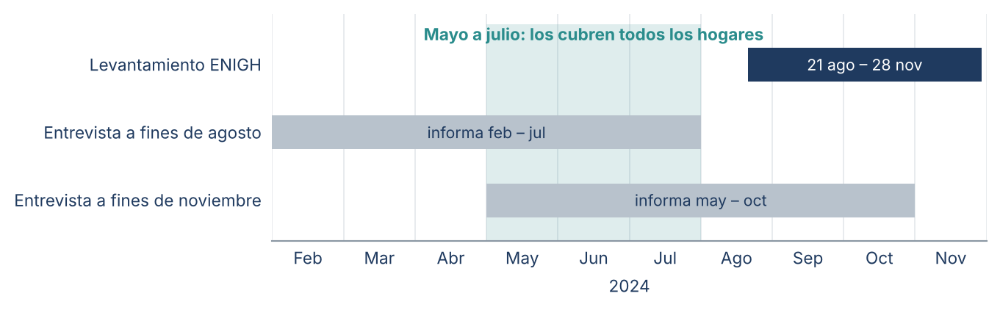
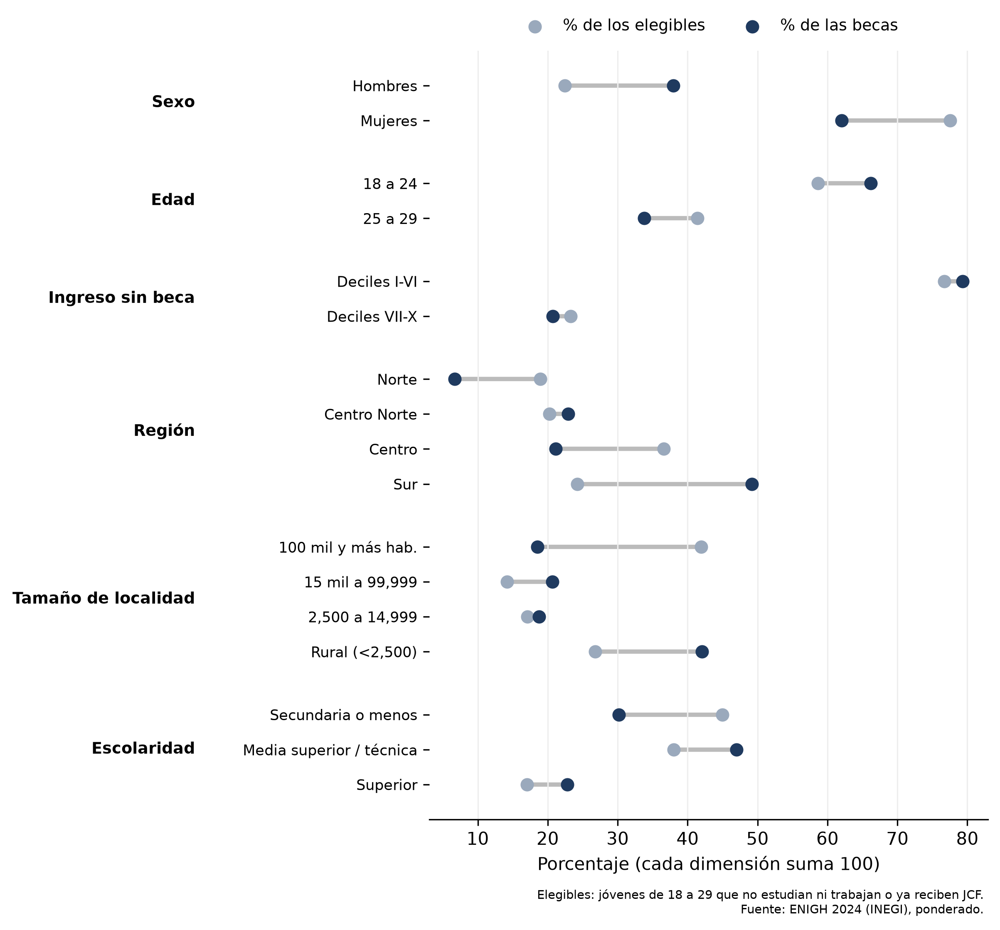

¿A quién llega Jóvenes Construyendo el Futuro?
Cobertura por ingreso y sexo con la ENIGH 2024
Resumen.
Jóvenes Construyendo el Futuro (JCF) es un programa federal que atiende a jóvenes de 18 a 29 años que no se encuentran estudiando o con un trabajo remunerado. Con la Encuesta Nacional de Ingresos y Gastos de los Hogares (ENIGH) 2024 estimo la razón de coberturas \(\rho\) entre dos grupos y la separo en dos factores: cuántos más jóvenes elegibles para el programa hay en un grupo y cuánto más le llega el programa a sus elegibles (\(\rho_{\text{cob}}\)). Elegible es quien cumple el criterio del problema público que se atiende (no estudia o está trabajando) o ya recibe la beca. JCF llega 2.8 veces más a los hogares de los deciles I a VI, casi todo porque ahí hay más elegibles. Entre los elegibles, la razón por ingreso va de 0.66 (con la beca en el ingreso) a 1.16 (sin ella), y los efectos fijos de entidad y la corrección por subcaptura regional la acercan a 1 o la bajan: no hay evidencia de que el programa llegue más a los elegibles de hogares pobres. Por sexo, la cobertura de las mujeres elegibles es 0.47 veces la de los hombres elegibles (0.47 [0.35, 0.65]), y la comparación con el padrón de beneficiarios muestra que la subcaptura de la encuesta no lo explica. La brecha se concentra en los hogares con niños de 0 a 5 años (0.16) y se invierte entre los elegibles que buscaron trabajo, aunque esa comparación sobrestima la cobertura de las mujeres. El programa llega a quien busca trabajo, pero casi no a quien cuida, y ambas conclusiones dependen de si las jóvenes que realizan trabajos de cuidado deberían contar como parte de la población a la que se dirige.
1. Introducción: ¿A quién llega Jóvenes Construyendo el Futuro (JCF)?
¿A quién llega Jóvenes Construyendo el Futuro (JCF)? El programa federal busca facilitar la incorporación al trabajo de jóvenes de 18 a 29 años que no estudian ni trabajan (STPS, 2023). Para ello, ofrece una beca mensual y capacitación en un centro de trabajo, donde las y los jóvenes pueden desarrollar habilidades y adquirir experiencia laboral.
Con la Encuesta Nacional de Ingresos y Gastos de los Hogares (ENIGH) 2024 podemos estimar quiénes reciben la beca y qué proporción representan de la población elegible, es decir, de quienes cumplen el criterio del programa. La primera comparación toma en cuenta a todas las personas de 18 a 29 años. La segunda se concentra en jóvenes que no estudian y no trabajan remuneradamente (NEET, por sus siglas en inglés)1 y, en la definición principal del estudio, incluye también a quienes reportan recibir la beca.
En los hogares de los deciles I a VI, la proporción de jóvenes que reporta recibir la beca es 2.8 veces la de los deciles VII a X. Buena parte de esa diferencia se explica porque la proporción de jóvenes elegibles es 2.4 veces mayor en los primeros seis deciles. Entre los elegibles, la razón de coberturas baja a 1.16 (IC del 95 % de 0.81 a 1.79). El intervalo deja abierta la posibilidad de que cualquiera de los dos grupos tenga mayor cobertura.
Este trabajo compara a quién llega el programa con la población a la que se dirige según sus reglas de operación. También muestra cómo cambia esa comparación con tres decisiones de medición: medir el ingreso con o sin la beca, contar como elegibles solo a quienes se declaran NEET o también a los receptores, y confiar en la encuesta o corregirla con el padrón. La última pesa porque la ENIGH capta cerca de 30% de los beneficiarios, una subcaptura mayor que la que Meyer, Mok y Sullivan (2015) documentan en las encuestas de Estados Unidos. Una cuarta decisión, que el plan no anticipaba es si las jóvenes que se dedican al trabajo de cuidados no remunerado cuentan como parte de la población a la que se debe dirigir el programa (§5.5).
La sección 2 describe las fuentes y el diseño muestral de la ENIGH. La sección 3 presenta el estimando y la especificación del plan de preanálisis. La sección 4 describe a quienes reciben la beca y a quienes no estudian ni trabajan y tampoco la reciben. La sección 5 presenta las estimaciones, las contrasta con el padrón, aplica la regla de decisión del plan y agrega tres análisis que el plan no preveía. La sección 6 discute el alcance de los resultados.
2. Datos y diseño
Uso dos fuentes. La primera es la Encuesta Nacional de Ingresos y Gastos de los Hogares (ENIGH) 2024, nueva serie (INEGI, 2025a), con la que INEGI mide cuánto ganan los hogares y en qué gastan. Tomo tres de sus tablas. La de población dice si cada integrante estudia y si trabajó, la de ingresos registra la beca de JCF y el concentrado trae el ingreso total del hogar.
La ENIGH entrevista a una muestra probabilística, estratificada y por conglomerados. En 2024 visitó 91,414 hogares en 681 estratos y 10,569 unidades primarias de muestreo (UPM), que son grupos de viviendas cercanas. Cada hogar tiene un factor de expansión, el número de hogares del país que representa, que va de 4 a 7,127 y que heredan sus integrantes. Por eso todas las estimaciones se ponderan y los errores se agrupan por UPM. Los intervalos describen la incertidumbre de haber entrevistado esta muestra y no otra. En ella hay 55,552 jóvenes de 18 a 29 años (23.6 millones expandidos) y 310 receptores de JCF, 108 hombres y 202 mujeres, en 247 UPM (Tabla C1).
La segunda fuente es el Padrón Único de Beneficiarios (Secretaría de Bienestar, 2024). Publica cada mes a todos los aprendices, con sexo, edad, entidad, municipio e importe pagado2. Es un registro administrativo y no una muestra, así que da la medida externa que la encuesta no tiene de sí misma (Meyer, Mok y Sullivan, 2015). Con él mido cuántos beneficiarios capta la ENIGH (§5.2).
Para comparar las dos fuentes hay que alinear el calendario. La ENIGH se levantó del 21 de agosto al 28 de noviembre de 2024 y pregunta por los seis meses previos a la entrevista. Un hogar entrevistado a fines de agosto informa de febrero a julio, y uno entrevistado a fines de noviembre, de mayo a octubre. Mayo, junio y julio son los únicos meses que cubren todos los hogares (Figura 1). Por eso comparo solo esos tres meses y solo a los jóvenes de 18 a 29 años de ambas fuentes. La beca la cobra el propio aprendiz, de modo que quien tiene derecho y quien recibe el pago son la misma persona.
Medición. Recibir el programa (\(D\)) sale de la clave P108 de la tabla de ingresos, en cualquiera de los seis meses previos a la entrevista. La elegibilidad (\(E\)) sale de la asistencia escolar y del trabajo el mes pasado. A 37 jóvenes les falta el dato de trabajo; en la especificación principal cuentan como “no trabajó” y la alternativa (i) los excluye. El ingreso (\(Z\)) es trimestral. No faltan edad, sexo, asistencia escolar ni ingreso.
3. Estimando y especificación
La pregunta compara grupos, así que el estimando también. La población son las personas de 18 a 29 años en hogares de México en 2024, ponderadas por el factor de expansión. \(D = 1\) si recibió JCF en los seis meses previos a la entrevista y \(M = 1\) si es mujer. \(E = 1\) si es elegible, es decir, si es NEET o ya recibe JCF3. Sumo a los receptores porque la mayoría, al ser entrevistados, ya no se declara NEET (§4.1). Así, todo el que recibe JCF tiene \(E = 1\). \(Z\) es el ingreso corriente trimestral del hogar por persona sin el ingreso de JCF, y \(P = 1\) si \(Z\) cae en los deciles I a VI de las personas del país.
Para un grupo \(G\) quiero saber cuánto más recibe el programa el grupo \(G = 1\) que el grupo \(G = 0\). La diferencia es \(\theta = \operatorname{E}[D \mid G=1] - \operatorname{E}[D \mid G=0]\). La razón de coberturas es \(\rho = \operatorname{E}[D \mid G=1]/\operatorname{E}[D \mid G=0] = 1 + \theta/\alpha\), con \(\alpha\) la cobertura del grupo \(G = 0\). Un \(\rho\) de 2 significa que el programa llega el doble al grupo \(G = 1\). Leo la razón y no la diferencia porque la encuesta capta solo una parte de los receptores. Si esa subcaptura es igual en los dos grupos, \(\theta\) se encoge pero \(\rho\) no cambia (§5.2).
Como todo receptor es elegible, \(\rho\) se separa de forma exacta en dos factores:
\[\rho = \underbrace{\frac{\Pr(E=1 \mid G=1)}{\Pr(E=1 \mid G=0)}}_{\rho_{\text{eleg}}:\ \text{cuántos son elegibles}} \times \underbrace{\frac{\operatorname{E}[D \mid E=1, G=1]}{\operatorname{E}[D \mid E=1, G=0]}}_{\rho_{\text{cob}}:\ \text{a quién le llega, entre los elegibles}}.\]
El primer factor dice cuántos más elegibles hay en un grupo que en otro. El segundo dice cuánto más le llega el programa a los elegibles de un grupo, y es el que responde si el programa está bien focalizado. En el vocabulario de evaluación de programas en México, el segundo factor es una razón de coberturas de la población objetivo, la que el programa se propone atender y que cumple sus criterios de elegibilidad, a diferencia de la población potencial, que presenta el problema que justifica su existencia (CONEVAL, 2017). La pieza (B) compara hogares de menor y mayor ingreso (\(G = P\)). La pieza (A) compara mujeres y hombres (\(G = M\)), y su estimando principal es \(\rho^{M}_{\text{cob}}\).
Especificación. Estimo cada factor con mínimos cuadrados ponderados por el factor de expansión, en un modelo lineal de probabilidad. Como el único regresor es binario, el modelo está saturado y la recta pasa exactamente por las dos medias. La constante es la cobertura del grupo \(G = 0\) y la pendiente es la diferencia entre grupos. Por eso aquí el mejor predictor lineal coincide con la esperanza condicional, y no hay una forma funcional que defender. Corro tres regresiones por pieza: \(D\) sobre \(G\) entre todos los jóvenes (\(\rho\)), \(E\) sobre \(G\) entre todos (\(\rho_{\text{eleg}}\)) y \(D\) sobre \(G\) solo entre quienes tienen \(E = 1\) (\(\rho_{\text{cob}}\)). Las tres usan los mismos pesos, así que \(\hat\rho = \hat\rho_{\text{eleg}} \times \hat\rho_{\text{cob}}\) también se cumple en la muestra.
Intervalos. Los errores estándar se agrupan por UPM, porque la muestra se eligió por conglomerados, y son robustos a heteroscedasticidad. La regresión, sin embargo, no da el error estándar de \(\rho\), que es un cociente. Por eso los IC95% salen de un bootstrap de Rao y Wu (1988) con 2,000 réplicas. En cada réplica remuestreo \(n_h - 1\) UPM con reemplazo dentro de cada estrato, reescalo los factores, recalculo los deciles y vuelvo a estimar. Recalcular los deciles importa porque el corte de ingreso también es una estimación. Con las mismas réplicas calculo el efecto mínimo detectable con 80% de potencia, \(\text{MDE} = \exp\{2.8 \cdot \text{EE}(\log\hat\rho)\}\).
Alternativas. Se reportan los resultados de las alternativas con su intervalo, en la Tabla 4 (§5.3). Cada una cambia un solo elemento. Tres tocan la medida de ingreso: (a) incluir la beca en el ingreso, como en el plan original; (b) usar el ingreso total del hogar con deciles de hogares; y (c) mover el corte a los deciles IV o V. Dos cambian la forma de comparar: (d) la pendiente de \(D\) sobre el rango percentil de \(Z\), en lugar de un corte, y (g) un logit ponderado. Otras dos cambian a quién se compara: (e) \(\rho\) por sexo y por edad, y (f) efectos fijos de entidad, que comparan a jóvenes del mismo estado. Las últimas tocan la elegibilidad: (h) contar solo a quienes se declaran NEET, sin sumar a los receptores que declaran trabajar, e (i) excluir las 37 observaciones sin dato de trabajo.
Regla de decisión. El plan (§5) fijó de antemano cuándo una diferencia importa. Es relevante si \(\hat\rho \geq 1.5\) o \(\hat\rho \leq 0.67\). Si el IC95% contiene a 1 y queda dentro de \((0.67, 1.5)\), descarto una diferencia relevante. Si el intervalo alcanza 1.5 o 0.67, el resultado es no concluyente. Además, como la encuesta capta menos de 50% de los beneficiarios no leo las coberturas ni \(\theta\) como cifras de población, solo las razones.
4. Descripción
4.1 Quiénes reciben JCF y quiénes, siendo elegibles, no lo reciben
La Tabla 1 divide a los jóvenes en tres grupos: quienes reciben JCF, los elegibles que no lo reciben (NEET sin JCF) y el resto. Los dos primeros forman la población elegible \(E\), así que su contraste muestra a quién deja fuera el programa.
| Receptores JCF | NEET sin JCF | Resto | |
|---|---|---|---|
| Observaciones (n) | 310 | 11,928 | 43,314 |
| Mujeres | 62.1 | 77.9 | 44.8 |
| Mujeres con hijos (% de mujeres) | 37.2 | 62.5 | 28.6 |
| Niño de 0 a 5 en el hogar | 31.4 | 47.9 | 26.8 |
| Secundaria o menos | 30.2 | 45.3 | 25.1 |
| Superior | 22.8 | 16.9 | 36.4 |
| Vive con pareja | 33.6 | 44.2 | 25.5 |
| Se considera indígena | 30.4 | 24.6 | 21.6 |
| Discapacidad | 2.6 | 6.3 | 2.2 |
| Localidad rural | 42.1 | 26.5 | 18.2 |
| Deciles I-VI | 79.3 | 76.6 | 52.5 |
Receptores y NEET sin JCF viven en hogares de ingreso parecido. En ambos grupos, cerca de ocho de cada diez están en los deciles I a VI (79% y 77%). Lo que los separa es la carga de cuidados. Entre las mujeres NEET sin JCF, 63% tiene hijos, contra 37% de las receptoras. Además, 48% de los NEET sin JCF vive con un niño de 0 a 5 años.
Las razones que dan para no trabajar apuntan en la misma dirección. El 83% de las mujeres NEET sin JCF se dedica a los quehaceres del hogar, mientras que el 54% de los hombres NEET sin JCF buscó trabajo. Los receptores, por su parte, son más rurales (42% contra 27%) y se consideran indígenas con más frecuencia (30% contra 25%). Eso coincide con la prioridad que las reglas de operación dan a municipios de alto rezago y a población indígena.
La tabla también deja ver un problema de medición. Solo 21% de los receptores se declara NEET, y 65% dice que trabajó el mes pasado porque cuenta el aprendizaje como trabajo. Por eso la elegibilidad se define como NEET o receptor. Si solo se contara a quienes se declaran NEET, quedarían fuera cuatro de cada cinco receptores (§5.3).
4.2 Cómo se reparte la beca entre los elegibles
La Tabla 1 dice quiénes son los grupos, pero no cómo se reparten las becas entre ellos. Para eso comparo dos partes. \(s^{E}_{g}\) es la parte de los jóvenes elegibles que pertenece al grupo \(g\), y \(s^{D}_{g}\) es la parte de las becas que recibe. El índice \(s^{D}_{g}/s^{E}_{g}\) vale 1 si el grupo recibe justo su parte, más de 1 si recibe más y menos de 1 si recibe menos. Es una lectura de \(\rho_{\text{cob}}\) grupo por grupo, frente al promedio y no frente a otro grupo. La Figura 2 lo muestra para varias dimensiones y la Tabla C5 da los intervalos.

Por ingreso, la beca se reparte como los elegibles. Los deciles I a VI tienen 76.7% de los elegibles y reciben 79.3% de las becas (índice 1.03 [0.95, 1.12]). Las brechas aparecen en otras dimensiones. Reciben menos de su parte las mujeres (0.80 [0.71, 0.89]), los jóvenes en hogares con niños de 0 a 5 años (0.66 [0.52, 0.80]), quienes tienen secundaria o menos (0.67 [0.52, 0.83]) y quienes viven en ciudades de 100 mil habitantes o más (0.44 [0.30, 0.60]).
Reciben más de su parte las localidades rurales (1.57 [1.27, 1.88]) y, según la encuesta, el Sur (2.03 [1.67, 2.38]). La ventaja del Sur está inflada, porque ahí se declara la beca más que en el resto del país, y §5.2 la corrige con el padrón. Que el Sur rural reciba más es coherente con un programa que prioriza municipios de alto rezago. En cambio, que los hogares con niños pequeños y las ciudades grandes reciban menos, es una brecha que el diseño no busca. El §5.5 muestra que la de los niños pequeños concentra la brecha por sexo.
5. Resultados
5.1 Piezas (B) y (A): cuánto es elegibilidad y cuánto es cobertura
La Tabla 2 reúne las dos piezas. Para cada comparación da la razón total, sus dos factores, el MDE y la zona de la regla en que cae \(\rho_{\text{cob}}\).
| Comparación | \(\rho\) | \(\rho_{\text{eleg}}\) | \(\rho_{\text{cob}}\) | MDE \(\rho_{\text{cob}}\) | Zona de \(\rho_{\text{cob}}\) |
|---|---|---|---|---|---|
| (B) Deciles I–VI vs VII–X, sin beca | 2.83 [1.97, 4.32] | 2.43 [2.27, 2.59] | 1.16 [0.81, 1.79] | 1.75 | No concluyente |
| (a) Deciles I–VI vs VII–X, con beca | 1.60 [1.18, 2.23] | 2.40 [2.25, 2.56] | 0.66 [0.49, 0.93] | 1.58 | Menor, relevante |
| (A) Mujeres vs hombres | 1.53 [1.15, 2.11] | 3.23 [3.02, 3.45] | 0.47 [0.35, 0.65] | 1.56 | Menor, relevante |
(B) A qué hogares. JCF llega 2.83 veces más a los jóvenes de los deciles I a VI que a los de VII a X. La razón se separa en \(\rho_{\text{eleg}} = 2.43\) y \(\rho_{\text{cob}} = 1.16\), así que casi toda la brecha viene de que en esos hogares hay más elegibles. Entre los elegibles, el IC95% de \(\rho_{\text{cob}}\) va de 0.81 a 1.79. Contiene a 1 y también alcanza 1.5, por lo que el resultado es no concluyente. Los datos son compatibles con un programa que llega parejo a los elegibles y con uno que favorece de manera relevante a los de hogares de menor ingreso. El MDE de 1.75 lo anticipaba, porque con 310 receptores la pieza (B) no tiene potencia para detectar una razón de 1.5. La hipótesis del plan predecía \(\rho_{\text{eleg}} > 1\) y \(\rho_{\text{cob}} \approx 1\). La primera parte se cumple y la segunda no se puede afirmar ni descartar.
Con y sin beca. Si el ingreso incluye la beca, \(\rho_{\text{cob}}\) cae a 0.66 (IC95% de 0.49 a 0.93) y queda del otro lado de 1. Es el efecto mecánico que el plan anticipaba. Al restar la beca, 39 de los 293 hogares receptores (11% ponderado) cambian de grupo, y su decil medio baja de 5.4 a 4.0. El cambio se concentra en el fondo de la distribución. Sin la beca, 33% de los receptores queda en el 15% más pobre de las personas; con ella, 6%. En 42% de esos hogares la beca es al menos la mitad del ingreso, que es justo donde suponer que el resto del ingreso no cambiaría es menos creíble (Figura C1). Por eso leo las dos definiciones como cotas de \(\rho^{P}_{\text{cob}}\): 0.66 con la beca y 1.16 sin ella. El ingreso con beca describe la posición del hogar después de recibir el programa.
(A) A quién. JCF llega 1.53 veces más a las mujeres que a los hombres, pero solo porque entre ellas hay 3.23 veces más elegibles. Entre los elegibles, la cobertura de las mujeres es 0.47 veces la de los hombres (IC95% de 0.35 a 0.65). El intervalo queda completo por debajo de 0.67, así que la diferencia es relevante. La regresión (3) lo muestra de otro modo. Su constante es 0.033 y su pendiente \(-0.017\) (EE agrupado 0.004), de modo que la cobertura de las mujeres elegibles es cerca de la mitad de la de los hombres elegibles. Por la subcaptura, esas coberturas no son cifras de población, pero su cociente sí se puede leer.
5.2 ¿Es un problema de la encuesta? Comparación con el padrón
Una encuesta no puede decir cuánto se equivoca: hace falta una medida externa del valor verdadero (Meyer, Mok y Sullivan, 2015). Para JCF existe el Padrón Único de Beneficiarios que publica cada mes el registro de todos los aprendices, con sexo, edad, entidad, municipio e importe pagado (§2). Como en Meyer et al. (2015, pp. 216–218), antes de comparar se alinean el periodo, la población y la persona. La ENIGH se levantó del 21 de agosto al 28 de noviembre de 2024 y pregunta por los seis meses previos a la entrevista, así que mayo, junio y julio son los únicos meses que caen en el periodo de referencia de todos los hogares. La comparación se restringe a esos meses y a los jóvenes de 18 a 29 años de ambas fuentes. La beca la cobra el propio aprendiz, de modo que no hay diferencia entre quien tiene derecho y quien recibe el pago.
| Indicador | ENIGH [IC95%] | Padrón |
|---|---|---|
| Sesgo: total ENIGH / total padrón \(-\) 1 | ||
| Sesgo en personas | -0.70 [-0.75, -0.65] | |
| Sesgo en meses | -0.69 [-0.75, -0.64] | |
| Sesgo en pesos | -0.71 [-0.76, -0.66] | |
| Lo que declaran quienes sí declaran | ||
| Monto mensual (pesos) | 7,154 [6,940, 7,329] | 7,611 |
| Continuidad: cobró en mayo y en julio | 0.79 [0.71, 0.87] | 0.66 |
| Tasa neta de declaración \(r\) (personas-mes), por región | ||
| Norte | 0.31 [0.16, 0.49] | |
| Centro Norte | 0.26 [0.18, 0.36] | |
| Centro | 0.23 [0.15, 0.32] | |
| Sur | 0.40 [0.30, 0.51] | |
| Razón Sur / Centro | 1.76 [1.13, 2.89] | |
| Tasa neta de declaración \(r\), por sexo | ||
| Mujeres | 0.30 [0.24, 0.37] | |
| Hombres | 0.31 [0.23, 0.40] | |
| Razón mujeres / hombres | 0.98 [0.72, 1.38] |
Cuánto falta. El sesgo es el total ponderado de la ENIGH entre el total del padrón, menos 1 (Tabla 3). Faltan alrededor de 70% de las personas, de los meses y de los pesos. Es una tasa neta: mezcla a beneficiarios que no declaran la beca con personas que la declaran sin recibirla, así que la proporción de beneficiarios que sí la declaran podría ser todavía menor. Como la tasa de declaración queda debajo de 50%, se aplica la regla del plan: las coberturas y \(\theta\) no se leen como cifras de población, solo las razones.
Quién falta. Los tres sesgos casi coinciden, como en Meyer et al. (2015, pp. 210–211). El faltante viene de quienes no declaran nada, no de quienes declaran de menos. Quien declara reporta un monto mensual cercano al pagado, 7,154 pesos frente a 7,611 en el padrón, que incluye pagos acumulados. El monto, eso sí, viene redondeado. De los 763 meses declarados entre mayo y julio (todas las edades, sin ponderar), 45% son exactamente 7,500 pesos y solo 15% coincide con la beca de 7,572.
El error sí aparece en la duración. De quienes cobraron en mayo, 0.66 siguen en el padrón en julio, y en la ENIGH la proporción es 0.79 [0.71, 0.87]. Hay dos lecturas posibles. O los hogares declaran meses que ya no cobraron, o la encuesta capta mejor a quienes llevan más tiempo en el programa, y con totales agregados no se pueden separar. Eso explica que la tasa mensual suba de mayo a julio (Tabla C3), porque el padrón se reduce más rápido que lo que declara la encuesta.
Por sexo. Para la pieza (A) importa si mujeres y hombres declaran la beca en la misma proporción, porque la razón observada es la verdadera multiplicada por \(r_M/r_H\). Entre los de 18 a 29 años, la ENIGH capta 30.4% de los meses de beca de las mujeres y 31.0% de los de los hombres, así que \(r_M/r_H\) = 0.98 [0.72, 1.38]4. Para que la brecha fuera solo un artefacto de la encuesta, \(r_M/r_H\) tendría que valer cerca de 0.47, y ese valor queda fuera del intervalo. Aun en su límite inferior (0.72), el \(\rho^{M}_{\text{cob}}\) corregido sería 0.66, todavía debajo de 15. La corrección supone que el error es proporcional dentro de cada sexo. El padrón también confirma el perfil de los receptores, con 61.0% de mujeres y 96.9% de 18 a 29 años, contra 59.2% y 95.7% en la ENIGH expandida.
Por región. Aquí la tasa sí cambia. La ENIGH capta 0.40 [0.30, 0.51] de los meses de beca del Sur y 0.23 [0.15, 0.32] de los del Centro. La razón Sur/Centro es 1.76 [1.13, 2.89], con un intervalo que no contiene a 1, y eso infla la ventaja del Sur en la incidencia (§4.2). Para corregirla, tomo la parte de las becas de cada región del padrón y la parte de los elegibles de la ENIGH. Con esa corrección, el índice del Sur baja de 2.03 a 1.56 y el del Centro sube de 0.58 a 0.81. El del Norte pasa de 0.35 a 0.43 y el de Centro Norte, de 1.13 a 1.21.
Lo que no se puede separar. Con totales agregados no se distingue si el faltante viene de hogares que no contestaron o de respuestas equivocadas. INEGI corrige la no respuesta reponderando a las viviendas que sí contestaron dentro de cada estrato (INEGI, 2025b, §8.1). Esa corrección elimina el sesgo solo si, dentro del estrato, contestar no depende de recibir JCF, y la encuesta no puede comprobarlo. Meyer et al. separan las dos fuentes de error con microdatos ligados, pero la ENIGH pública no se puede ligar con el padrón. Tampoco se puede medir la tasa por ingreso, porque el padrón no lo trae. El patrón regional pide cautela con la pieza (B): si en los hogares de menor ingreso se declara más, como en el Sur, el \(\rho_{\text{cob}}\) verdadero de (B) sería menor que 1.16. El §5.5 mide cuánto pesa la parte regional de ese sesgo.
5.3 Robustez
La Tabla 4 reúne las alternativas del plan para \(\rho_{\text{cob}}\), cada una con su intervalo y su zona.
| Especificación | \(\rho_{\text{cob}}\) [IC95%] | Zona |
|---|---|---|
| Pieza (B): deciles I–VI vs VII–X | ||
| (B) Principal | 1.16 [0.81, 1.79] | No concluyente |
| (a) Ingreso con la beca | 0.66 [0.49, 0.93] | Menor, relevante |
| (b) Ingreso total del hogar, deciles de hogares | 1.16 [0.82, 1.78] | No concluyente |
| (c) Corte en el decil IV | 1.24 [0.90, 1.74] | No concluyente |
| (c) Corte en el decil V | 1.16 [0.81, 1.63] | No concluyente |
| (e) Solo mujeres | 0.89 [0.57, 1.51] | No concluyente |
| (e) Solo hombres | 2.24 [1.36, 4.40] | Mayor, relevante |
| (e) 18 a 24 años | 1.12 [0.71, 1.90] | No concluyente |
| (e) 25 a 29 años | 1.24 [0.74, 2.57] | No concluyente |
| (f) Efectos fijos de entidad | 0.87 [0.60, 1.37] | No concluyente |
| (g) Logit ponderado (modelo saturado) | 1.16 [0.81, 1.79] | No concluyente |
| (h) Elegibles = solo NEET declarados | 2.13 [1.01, 8.08] | Mayor, relevante |
| (i) Sin las 37 obs. sin registro de trabajo | 1.14 [0.80, 1.75] | No concluyente |
| Pieza (A): mujeres vs hombres | ||
| (A) Principal | 0.47 [0.35, 0.65] | Menor, relevante |
| (f) Efectos fijos de entidad | 0.41 [0.29, 0.58] | Menor, relevante |
| (g) Logit ponderado (modelo saturado) | 0.47 [0.35, 0.65] | Menor, relevante |
| (h) Elegibles = solo NEET declarados | 1.73 [0.75, 7.53] | No concluyente |
| (i) Sin las 37 obs. sin registro de trabajo | 0.47 [0.36, 0.66] | Menor, relevante |
En la pieza (B), nueve de las doce alternativas de la Tabla 4 dejan \(\rho_{\text{cob}}\) en la zona no concluyente. Las excepciones son tres. Con la beca en el ingreso (a), \(\rho_{\text{cob}}\) cae a 0.66, del otro lado de 1 (§5.1). Entre los hombres elegibles, JCF llega 2.24 veces más a los de hogares de menor ingreso (IC95% de 1.36 a 4.40); entre las mujeres, la razón es 0.89 [0.57, 1.51]. Por la regla del plan, la conclusión de (B) se enuncia como dependiente de esa partición. La tercera es (h), cuyo límite inferior queda justo en 1.01, en el borde de la zona. Su definición de elegibilidad, además, tiene el problema que discuto dos párrafos abajo.
Los efectos fijos de entidad (f) comparan a jóvenes del mismo estado y dejan \(\rho^{P}_{\text{cob}}\) en 0.87 [0.60, 1.37]. El intervalo sigue siendo no concluyente, pero el punto queda debajo de 1; con la beca en el ingreso y efectos fijos, baja a 0.45 [0.31, 0.67]. En (A), los efectos fijos dan 0.41 [0.29, 0.58]. El logit (g) reproduce exactamente los cocientes, como debe ocurrir con un modelo saturado (§3). La pendiente sobre el rango percentil (d) es -0.0087 [-0.0116, -0.0060] sin beca y -0.0014 [-0.0034, 0.0005] con beca. La cobertura baja con el ingreso solo cuando se resta la beca, y ese descenso viene de los tres primeros veintiles (Figura C1).
En la pieza (A), la alternativa que cambia la conclusión es (h). Si la elegibilidad se mide solo con quienes se declaran NEET, \(\rho^{M}_{\text{cob}}\) sube a 1.73 y el intervalo, de 0.75 a 7.53, lo vuelve no concluyente. Esa definición no es neutral entre sexos. Se declaran NEET 29% de las receptoras y solo 8% de los receptores, de modo que (h) descarta a casi todos los hombres que reciben JCF. El denominador de hombres queda casi sin receptores. Es tan pequeño que en 3 de las 2,000 réplicas no queda ningún receptor hombre declarado NEET, la razón no está definida y esas réplicas quedan fuera del intervalo. Si se cuentan como razones infinitas, el límite superior pasa de 7.53 a 7.85 y la conclusión no cambia. La especificación principal cuenta a todos los receptores como elegibles, porque para recibir la beca tuvieron que cumplir la regla del programa.
5.4 La regla de decisión
El plan (§5) fijó seis enunciados antes del análisis. Los evalúo en sus propios términos.
- Verificación. La ENIGH capta cerca de 30% del padrón, menos de 50%. Por eso solo leo razones, no coberturas ni \(\theta\) (§5.2).
- Dirección. Para los hogares de menor ingreso, el IC95% de \(\rho\) (2.83 [1.97, 4.32]) queda completo por encima de 1. Para las mujeres, el IC95% de \(\rho\) (1.53 [1.15, 2.11]) queda completo por encima de 1.
- Tamaño. El IC95% de \(\rho^{P}_{\text{cob}}\) (0.81 a 1.79) contiene a 1 y alcanza 1.5, así que el resultado de (B) es no concluyente. El de \(\rho^{M}_{\text{cob}}\) (0.35 a 0.65) queda completo por debajo de 0.67, una diferencia relevante.
- Descomposición. Como el IC95% de \(\rho^{P}_{\text{cob}}\) contiene a 1, la brecha por ingreso se explica por cuántos elegibles hay en cada grupo. Por el punto anterior, sin embargo, no se descarta que el programa también favorezca a los elegibles de hogares pobres. En (A), \(\rho^{M}_{\text{cob}} < 1\), de modo que entre los elegibles el programa llega menos a las mujeres.
- Ingreso. Con beca, \(\rho^{P}_{\text{cob}}\) cae del otro lado de 1 (0.66). Lo reporto como efecto mecánico de la transferencia, porque al restarla 11% de los hogares receptores cambia de grupo (§5.1).
- Alternativas. En (B), la muestra de hombres (e) y la definición (h) cambian la zona, así que la conclusión de (B) se enuncia como dependiente de ellas. En (A), solo (h) la cambia. La conclusión de (A) se enuncia entonces como dependiente de la definición de elegibilidad, y la principal sigue la regla del programa.
5.5 Más allá del plan: qué hay detrás de las dos razones
Los análisis de esta sección no estaban en el plan. Los agregué después de revisar el borrador, usan el mismo bootstrap y la misma semilla, y los reporto aparte para no mezclarlos con la regla de decisión (Apéndice B). Responden dos preguntas: cuánto pesa la subcaptura regional en (B) y qué hay detrás del 0.47 de (A).
| Especificación | \(\rho_{\text{cob}}\) [IC95%] | Zona |
|---|---|---|
| Pieza (B): deciles I–VI vs VII–X, sin beca | ||
| Principal (Tabla 2) | 1.16 [0.81, 1.79] | No concluyente |
| Corregida por la tasa de reporte de su región | 1.11 [0.77, 1.72] | No concluyente |
| Con beca, corregida por región | 0.62 [0.47, 0.88] | Menor, relevante |
| (j1) Elegibles = receptores + NEET que buscaron trabajo | 1.71 [1.19, 2.64] | Mayor, relevante |
| (j2) Elegibles = receptores + NEET sin quehaceres del hogar | 1.76 [1.23, 2.71] | Mayor, relevante |
| Pieza (A): mujeres vs hombres | ||
| Principal (Tabla 2) | 0.47 [0.35, 0.65] | Menor, relevante |
| Corregida por la tasa de reporte de su región | 0.47 [0.35, 0.67] | Menor, relevante |
| Solo hogares con un niño de 0 a 5 años | 0.16 [0.10, 0.29] | Menor, relevante |
| Solo hogares sin niños de 0 a 5 años | 0.85 [0.59, 1.25] | No concluyente |
| (j1) Elegibles = receptores + NEET que buscaron trabajo | 2.26 [1.67, 3.13] | Mayor, relevante |
| (j2) Elegibles = receptores + NEET sin quehaceres del hogar | 2.29 [1.73, 3.15] | Mayor, relevante |
Subcaptura regional en (B). Si cada receptor se divide entre la tasa de reporte de su región, recalculada en cada réplica, \(\rho^{P}_{\text{cob}}\) pasa de 1.16 a 1.11 [0.77, 1.72], y con la beca en el ingreso, de 0.66 a 0.62 [0.47, 0.88]. La corrección solo capta la parte del sesgo por ingreso que coincide con la región. Si dentro de cada región los hogares de menor ingreso declaran más, el \(\rho^{P}_{\text{cob}}\) verdadero sería todavía menor. La misma corrección deja a (A) donde estaba (0.47 [0.35, 0.67]), porque la tasa de reporte casi no cambia por sexo.
Qué hay detrás del 0.47. La población elegible \(E\) junta situaciones distintas. El 83% de las mujeres NEET sin JCF se dedica a los quehaceres del hogar, y el 54% de los hombres buscó trabajo (§4.1). Dos cortes las separan. El primero divide \(E\) según haya un niño de 0 a 5 años en el hogar, sin tocar la definición de elegibilidad. En hogares con un niño pequeño, la cobertura de las mujeres elegibles es 0.16 [0.10, 0.29] veces la de los hombres; en hogares sin niños pequeños es 0.85 [0.59, 1.25], un intervalo que contiene a 1. La brecha por sexo se concentra donde hay alguien a quien cuidar. Los hombres de hogares con un niño pequeño que reciben la beca son pocos (28 en la muestra), así que ese cociente es impreciso, aunque su intervalo queda lejos de 1.
El segundo corte cambia la definición de elegibilidad: cuenta solo a los receptores y a los NEET que buscaron trabajo (j1), o a los receptores y a los NEET que no se dedican a los quehaceres (j2). Con esas definiciones, \(\rho^{M}_{\text{cob}}\) pasa a 2.26 [1.67, 3.13] y 2.29 [1.73, 3.15], y \(\rho^{P}_{\text{cob}}\) a 1.71 [1.19, 2.64] y 1.76 [1.23, 2.71]. Entre los elegibles que buscan trabajo, el programa llega más a las mujeres y a los hogares de menor ingreso. Este corte, sin embargo, no es simétrico. A los receptores no se les puede preguntar por qué no trabajan, porque casi todos declaran trabajar, así que todos se quedan en \(E\); de los no receptores, en cambio, solo quedan quienes buscaron empleo. Si muchas receptoras habrían estado dedicadas a los quehaceres sin el programa, (j1) y (j2) exageran su cobertura. Por eso no los leo como estimaciones de \(\rho_{\text{cob}}\), sino como el otro extremo de un rango cuya posición depende de una sola decisión: si las jóvenes que cuidan cuentan como parte de la población a la que se dirige el programa. La Tabla C6 da los conteos de cada definición.
6. Interpretación y limitaciones
Qué son estas razones. \(\hat\rho^{M}_{\text{cob}}\) y \(\hat\rho^{P}_{\text{cob}}\) son cocientes de la esperanza condicional de \(D\) entre dos grupos de jóvenes elegibles, en México en 2024. Como el regresor es binario, la regresión reproduce exactamente esas medias, sin supuestos de forma funcional. Es decir, entre los elegibles, a las mujeres JCF les llega con cerca de la mitad de frecuencia que a los hombres, con un intervalo de 0.35 a 0.65, y esa brecha se concentra en los hogares con niños pequeños (§5.5). Una lectura causal requeriría separar la decisión de postularse, la de los centros de trabajo y la asignación del programa, y estos datos no lo permiten.
Limitaciones. Cuatro limitaciones vienen de estas variables. La primera es que la elegibilidad se mide después del programa. \(E\) se observa al levantamiento y no antes de entrar, por eso cuento a todos los receptores como elegibles, y un receptor que nunca fue NEET infla el denominador de su grupo. La segunda es que restar la beca no recupera el ingreso sin programa. Supone que el resto del ingreso no cambia, y si sin JCF el joven hubiera trabajado, \(Z\) subestima el ingreso de los hogares receptores.
La tercera es la subcaptura. En términos netos, la ENIGH capta cerca de 30% de los beneficiarios. No detecto una diferencia por sexo, aunque el intervalo de \(r_M/r_H\) es ancho (0.72 a 1.38). Sí hay diferencia por región; corregirla baja \(\rho^{P}_{\text{cob}}\) de 1.16 a 1.11 (§5.5). Por ingreso dentro de cada región y por tamaño de localidad no se puede verificar, porque el padrón no trae ingreso e identifica municipios, no localidades. Por eso el índice rural (1.57) y el de las ciudades grandes (0.44) se leen con la misma cautela que el regional, y el \(\rho_{\text{cob}}\) de (B) podría estar sobrestimado. La cuarta es la potencia. Con 310 receptores en 247 UPM, el MDE de \(\rho_{\text{cob}}\) es 1.75 en (B) y 1.56 en (A), y un intervalo que contiene a 1 no demuestra que el programa sea parejo.
Ética de presentar el resultado. Una razón de 0.47 es fácil de citar como “las mujeres no quieren el programa” o como “el programa discrimina a las mujeres”. Ninguna de las dos lecturas se sigue de estos datos. NEET es una categoría estadística, no un juicio sobre la voluntad de las personas. El 83% de las mujeres NEET sin JCF declara dedicarse a los quehaceres del hogar, un trabajo no pagado que la categoría NEET vuelve invisible. La brecha se concentra en los hogares con niños de 0 a 5 años (0.16 frente a 0.85 sin niños pequeños). Esa asociación puede reflejar que un aprendizaje de jornada completa es incompatible con el cuidado, que las madres no se postulan o que los centros de trabajo no las aceptan. Estos datos no separan esas explicaciones.
Implicaciones. Por ingreso, los datos no muestran que JCF se aleje de donde están los elegibles. Con la definición del plan, el programa no llega más a los elegibles de hogares de menor ingreso, pero tampoco hay evidencia de que les llegue menos. Lo que separa a quien recibe la beca de quien no la recibe es otra cosa. Entre los elegibles que buscaron trabajo, el programa llega más a las mujeres y a los hogares de menor ingreso, aunque esa comparación sobrestima su cobertura (§5.5). La brecha está en las jóvenes que cuidan: en hogares con niños pequeños, la cobertura de las mujeres elegibles es cerca de una sexta parte de la de los hombres. Que un aprendizaje de jornada completa sea difícil de combinar con el cuidado es una hipótesis que estos datos hacen plausible, no una conclusión. Probar si el cuidado infantil o los horarios compatibles cerrarían la brecha requiere otro diseño. De aquí sí se sigue una pregunta para quien diseña el programa: las jóvenes que cuidan cumplen la regla de elegibilidad, pero ¿son parte de la población a la que el programa se propone llegar? Si lo son, hoy casi no les llega.
Uso de IA. Usé Claude (Opus 5.5) para diseñar el código en Python (marimo) a partir del plan, verificar resultados, ajustar el código a Quarto y hacer una revisión del borrador, de la que salen los análisis del §5.5. Todo lo demás, en cuanto a la pregunta, el estimando, el plan, la decisión de caracterizar a los receptores y a los NEET, y la interpretación, es mío.
Referencias
CONEVAL. (2017). Términos de referencia de la evaluación de diseño. Consejo Nacional de Evaluación de la Política de Desarrollo Social. https://www.coneval.org.mx/Evaluacion/MDE/Documents/TDR_Diseno.pdf
INEGI. (2025a). Encuesta Nacional de Ingresos y Gastos de los Hogares (ENIGH) 2024, nueva serie [Conjunto de datos]. https://www.inegi.org.mx/programas/enigh/nc/2024/#datos_abiertos
INEGI. (2025b). Encuesta Nacional de Ingresos y Gastos de los Hogares 2024. ENIGH. Nueva serie. Diseño muestral. Instituto Nacional de Estadística y Geografía.
Meyer, B. D., Mok, W. K. C., y Sullivan, J. X. (2015). Household surveys in crisis. Journal of Economic Perspectives, 29(4), 199–226. https://doi.org/10.1257/jep.29.4.199
Rao, J. N. K., y Wu, C. F. J. (1988). Resampling inference with complex survey data. Journal of the American Statistical Association, 83(401), 231–241.
Secretaría de Bienestar. (2024). Padrón Único de Beneficiarios: Programa S280 Jóvenes Construyendo el Futuro. https://pub.bienestar.gob.mx/v2/pub/programasIntegrales/9/6317
STPS. (2023). Reglas de Operación del Programa Jóvenes Construyendo el Futuro para el ejercicio fiscal 2024. Diario Oficial de la Federación, 29 de diciembre de 2023. https://dof.gob.mx/nota_detalle.php?codigo=5713234&fecha=29/12/2023#gsc.tab=0
Apéndice A. Respuesta al árbitro
Pendiente: se redacta al recibir el reporte del árbitro (23 de noviembre). Media página: para cada preocupación mayor, la preocupación en una línea y qué cambié (con la sección o tabla) o por qué no.
Apéndice B. Desviaciones respecto al plan 2.2
- Verificación por sexo y edad. El plan (§3 y §6) indicaba que el padrón no reporta sexo ni edad, con base en los cortes anuales de 2019, revisados al escribirlo. Los archivos mensuales de 2024 sí los incluyen, así que la tasa de reporte se calcula también por sexo y para 18 a 29 años (§5.2). La especificación y la regla no cambian.
- Descripción ampliada. Se agregan la Tabla 1, el cruce de la situación declarada de los receptores y la incidencia por grupo (§4.1 y §4.2). Son descripción dentro del §4 del plan; no cambian el estimando. Los IC de la incidencia salen de las mismas réplicas del bootstrap, con los deciles recalculados.
- Comparación con el padrón ampliada. El plan preveía solo la tasa de reporte. Se agregan el sesgo en personas, meses y pesos, el monto y la duración declarados y la tasa por región, siguiendo a Meyer et al. (2015), con el mismo bootstrap (notebook, sección 8.2; §5.2). Es una verificación: no cambia el estimando ni la regla de decisión, pero sí matiza la incidencia regional del §4.2.
- Detalles técnicos. La base tiene 681 estratos, no 680. El logit se estima con los pesos normalizados a media 1, porque con factores de hasta 7,127 el algoritmo no converge. Ningún estrato tiene una sola UPM (el mínimo es 2), así que el remuestreo de \(n_h - 1\) UPM está definido en todos.
- Análisis agregados después del borrador (Tabla 4 y §5.5). La Tabla 4 incluye ahora las alternativas (a), (d), (f) y (g) con sus intervalos, que el plan preveía y el borrador daba solo como cifras puntuales. Además agrego tres análisis que el plan no preveía: la corrección de \(\rho_{\text{cob}}\) por la tasa de reporte de cada región, el corte de (A) según haya un niño de 0 a 5 en el hogar y dos definiciones más estrechas de elegibilidad. Usan el mismo bootstrap y la misma semilla (
robustez_arbitro.py), no cambian el estimando, la especificación principal ni la regla de decisión, y se leen como exploratorios. Sí cambian la lectura: con beca y sin beca se presentan como cotas de \(\rho^{P}_{\text{cob}}\) (§5.1), y la conclusión de (A) se enuncia junto con su dependencia del cuidado (§5.5). - Nombre de \(E\). El plan llamaba necesidad a \(E\) y \(\rho_{\text{nec}}\) a su razón. Los renombro elegibilidad y \(\rho_{\text{eleg}}\), porque \(E\) mide quién cumple la regla del programa, no quién lo necesita o lo quiere. El cálculo es el mismo; en el código las variables conservan el nombre anterior (
E,_rho_nec).
Apéndice C. Tablas adicionales y robustez
| Grupo | n | Hombres | Mujeres | UPM | N expandida |
|---|---|---|---|---|---|
| Receptores, todas las edades | 327 | 116 | 211 | ||
| Receptores fuera de 18-29 | 17 | 8 | 9 | ||
| Receptores 18-29 | 310 | 108 | 202 | 247 | |
| Personas 18-29 | 55,552 | 26,657 | 28,895 | 23,614,859 | |
| 18-29 sin registro de trabajo | 37 |
| Decil | n | N (miles) | Receptores | NEET (%) | Cobertura entre \(E=1\) (%) | Mujeres (%) | Edad media |
|---|---|---|---|---|---|---|---|
| I | 5,285 | 1,979 | 61 | 38.9 | 2.62 | 59.3 | 23.3 |
| II | 5,243 | 2,119 | 52 | 33.8 | 2.38 | 59.1 | 23.2 |
| III | 5,630 | 2,273 | 34 | 29.2 | 1.54 | 55.2 | 23.1 |
| IV | 5,740 | 2,390 | 37 | 24.7 | 1.85 | 53.5 | 22.9 |
| V | 5,722 | 2,427 | 31 | 20.7 | 1.58 | 51.1 | 22.9 |
| VI | 5,853 | 2,402 | 29 | 20.0 | 1.83 | 51.6 | 23.0 |
| VII | 5,953 | 2,584 | 29 | 15.0 | 2.17 | 49.7 | 23.1 |
| VIII | 6,056 | 2,616 | 14 | 12.2 | 1.32 | 45.6 | 23.2 |
| IX | 5,697 | 2,576 | 13 | 9.2 | 1.94 | 47.6 | 23.6 |
| X | 4,373 | 2,249 | 10 | 8.4 | 1.28 | 47.1 | 24.2 |
| Edades | Periodo | ENIGH (personas-mes) | ENIGH expandida | Padrón | \(r_m\) [IC95%] |
|---|---|---|---|---|---|
| 18-29 | Promedio mayo-julio | 733 | 74,282 | 242,187 | 31.2% [25.9, 36.8] |
| 18-29 | Mayo 2024 | 265 | 80,719 | 284,863 | 28.3% [23.5, 33.5] |
| 18-29 | Junio 2024 | 245 | 74,940 | 253,995 | 29.5% [24.3, 35.3] |
| 18-29 | Julio 2024 | 223 | 67,188 | 187,703 | 35.8% [29.4, 42.7] |
| Todas | Promedio mayo-julio | 763 | 77,622 | 249,946 | 31.6% [26.2, 37.2] |
| Todas | Mayo 2024 | 275 | 83,895 | 293,092 | 28.6% [23.7, 33.6] |
| Todas | Junio 2024 | 258 | 79,375 | 262,291 | 30.3% [25.0, 35.9] |
| Todas | Julio 2024 | 230 | 69,595 | 194,455 | 35.8% [29.4, 42.6] |
| 18-29 | Razón mujeres/hombres, promedio | 0.97 [0.71, 1.37] | |||
| Todas | Razón mujeres/hombres, promedio | 0.92 [0.67, 1.29] |
| Modelo | Término | Coeficiente | EE (UPM) | n |
|---|---|---|---|---|
| B (1) D \(\sim\) P, todos | Intercept | 0.00199 | 0.00035 | 55,552 |
| B (1) D \(\sim\) P, todos | P | 0.00363 | 0.00065 | 55,552 |
| B (2) E \(\sim\) P, todos | Intercept | 0.11452 | 0.00330 | 55,552 |
| B (2) E \(\sim\) P, todos | P | 0.16351 | 0.00515 | 55,552 |
| B (3) D \(\sim\) P, E = 1 | Intercept | 0.01734 | 0.00311 | 12,238 |
| B (3) D \(\sim\) P, E = 1 | P | 0.00285 | 0.00359 | 12,238 |
| A (1) D \(\sim\) M, todos | Intercept | 0.00320 | 0.00041 | 55,552 |
| A (1) D \(\sim\) M, todos | M | 0.00170 | 0.00062 | 55,552 |
| A (2) E \(\sim\) M, todos | Intercept | 0.09690 | 0.00291 | 55,552 |
| A (2) E \(\sim\) M, todos | M | 0.21627 | 0.00530 | 55,552 |
| A (3) D \(\sim\) M, E = 1 | Intercept | 0.03299 | 0.00423 | 12,238 |
| A (3) D \(\sim\) M, E = 1 | M | -0.01737 | 0.00429 | 12,238 |
| (d) gamma: D \(\sim\) rango percentil sin beca | rango | -0.00871 | 0.00148 | 55,552 |
| (d) gamma: D \(\sim\) rango percentil con beca | rango_con | -0.00145 | 0.00099 | 55,552 |
| Dimensión | Grupo | Receptores (n) | % elegibles | % becas | Índice [IC95%] | Lectura |
|---|---|---|---|---|---|---|
| Sexo | Hombres | 108 | 22.5 | 37.9 | 1.69 [1.37, 2.01] | Más que su parte |
| Sexo | Mujeres | 202 | 77.5 | 62.1 | 0.80 [0.71, 0.89] | Menos que su parte |
| Edad | 18 a 24 | 208 | 58.6 | 66.2 | 1.13 [1.01, 1.24] | Más que su parte |
| Edad | 25 a 29 | 102 | 41.4 | 33.8 | 0.82 [0.66, 0.98] | Menos que su parte |
| Ingreso | Deciles I-VI | 244 | 76.7 | 79.3 | 1.03 [0.95, 1.12] | No distinguible |
| Ingreso | Deciles VII-X | 66 | 23.3 | 20.7 | 0.89 [0.62, 1.17] | No distinguible |
| Región | Centro | 68 | 36.6 | 21.2 | 0.58 [0.41, 0.76] | Menos que su parte |
| Región | Centro Norte | 98 | 20.2 | 22.9 | 1.13 [0.81, 1.48] | No distinguible |
| Región | Norte | 20 | 19.0 | 6.7 | 0.35 [0.18, 0.55] | Indicativo (\(<\) 30 receptores) |
| Región | Sur | 124 | 24.2 | 49.2 | 2.03 [1.67, 2.38] | Más que su parte |
| Localidad | 100 mil y más hab. | 48 | 41.9 | 18.5 | 0.44 [0.30, 0.60] | Menos que su parte |
| Localidad | 15 mil a 99,999 | 52 | 14.2 | 20.6 | 1.45 [1.00, 1.93] | No distinguible |
| Localidad | 2,500 a 14,999 | 48 | 17.1 | 18.8 | 1.10 [0.66, 1.55] | No distinguible |
| Localidad | Rural (<2,500) | 162 | 26.8 | 42.1 | 1.57 [1.27, 1.88] | Más que su parte |
| Escolaridad | Media superior / técnica | 142 | 38.0 | 47.0 | 1.24 [1.02, 1.44] | Más que su parte |
| Escolaridad | Secundaria o menos | 96 | 45.0 | 30.2 | 0.67 [0.52, 0.83] | Menos que su parte |
| Escolaridad | Superior | 72 | 17.0 | 22.8 | 1.34 [0.99, 1.73] | No distinguible |
| Se considera indígena | No | 217 | 75.3 | 69.6 | 0.92 [0.83, 1.01] | No distinguible |
| Se considera indígena | Sí | 93 | 24.7 | 30.4 | 1.23 [0.96, 1.51] | No distinguible |
| Discapacidad | No | 305 | 93.7 | 97.4 | 1.04 [1.00, 1.07] | No distinguible |
| Discapacidad | Sí | 5 | 6.3 | 2.6 | 0.41 [0.03, 1.01] | Indicativo (\(<\) 30 receptores) |
| Niño 0 a 5 en el hogar | No | 202 | 52.4 | 68.6 | 1.31 [1.18, 1.43] | Más que su parte |
| Niño 0 a 5 en el hogar | Sí | 108 | 47.6 | 31.4 | 0.66 [0.52, 0.80] | Menos que su parte |

| Definición de elegibles | \(n\) mujeres | Receptoras | \(n\) hombres | Receptores |
|---|---|---|---|---|
| Principal (NEET o receptor) | 9,823 | 202 | 2,415 | 108 |
| (j1) Receptores + NEET que buscaron trabajo | 1,010 | 202 | 1,313 | 108 |
| (j2) Receptores + NEET sin quehaceres | 1,605 | 202 | 2,118 | 108 |
| Principal, hogares con niño de 0 a 5 | 5,933 | 80 | 432 | 28 |
| Principal, hogares sin niños de 0 a 5 | 3,890 | 122 | 1,983 | 80 |
Reproducibilidad. El notebook de marimo notebook.py, en la raíz del repositorio, genera todos los archivos de output/ que lee este documento: estimaciones, bootstrap de Rao-Wu (2,000 réplicas, semilla 20261113, con los mismos multiplicadores para todos los estimadores), descripción, incidencia, tasa de reporte y sesgo frente al padrón. robustez_arbitro.py corre el notebook y, con la misma semilla, genera los análisis del §5.5 y las alternativas (d) y (f) de la Tabla 4 (output/arbitro_*.csv). El README explica cómo obtener los datos y reproducir cada número.
Notas
Recurro al termino de NEET como categoría estadística, para evitar no un juicio sobre la voluntad de las personas con el término despectivo de NINI.↩︎
Panel persona-mes construido a partir de los archivos mensuales del padrón (febrero de 2024 a enero de 2025).↩︎
Elegible describe el criterio de las reglas de operación (tener de 18 a 29 años y no estudiar ni trabajar). No dice si la persona necesita el programa, si lo quiere ni si le serviría: una joven que cuida a un niño pequeño es elegible aunque lo que le haga falta sea otra cosa.↩︎
La Tabla 3 acumula las personas-mes de los tres meses (0.98); la Tabla C3 promedia las tres tasas mensuales (0.97). Las dos definiciones dan casi lo mismo.↩︎
La subcaptura también podría mover el denominador \(E\): un receptor no captado que se declara NEET queda en \(E\) con \(D = 0\), y uno que se declara ocupado sale de \(E\). El efecto es pequeño porque los receptores son 2 a 3% de \(E\) (Tabla C2).↩︎